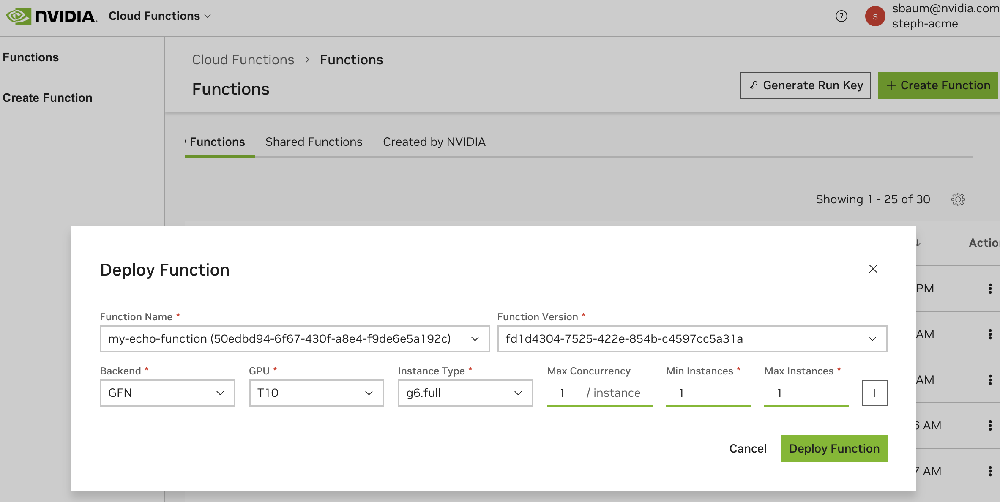

Function Deployment
This page describes deployment concepts and steps to deploy a function using Cloud Functions.
A function deployment refers to one or more function instances running on a cluster.
See Function Lifecycle for more key terminology and diagrams.
Deployment Validation
If your function is container-based, before deploying, it’s strongly recommended to run the local Deployment Validator, to catch common configuration issues and enable faster development cycles.
Clone the helper repository and install the validator:
1> git clone https://github.com/NVIDIA/nv-cloud-function-helpers.git
2> cd nv-cloud-function-helpers/local_deployment_test/
3> pip install -r requirements.txt
Run the validator on your container. Supported validation arguments:
--protocol--health-endpoint--inference-endpoint--container-port
1> python3 test_container.py --image-name $CONTAINER_IMAGE_NAME --protocol http --health-endpoint v2/health/live --inference-endpoint /v2/models/echo/infer --container-port 8000
Once checks have passed, you’ll be prompted to test out your container’s inference endpoint. Paste your function’s expected inference endpoint JSON request body into the temporary file that is generated. If everything is successful, proceed to deploy your function.
Deploying a Function
Before deploying a function, you must create it first. Once created it will be listed as INACTIVE. See Function Creation.
Your Cloud Functions account will have access to various GPU clusters, instance types and configurations up to a set amount. This is determined by your NVIDIA Account Manager.
Each function version can have a different deployment configuration, allowing for heterogeneous computing infrastructure to be used across a single function endpoint. Once a deployment is created, it can be updated at any time, for example, to change min or max instance counts.
Key Concepts
Term |
Description |
|---|---|
Cluster Group (Backend) |
A collection of one or more (though usually one) clusters to deploy on, for example - a CSP such as Azure, OCI, GCP or an NVIDIA-specific cluster like GFN. |
Instance Type |
Each GPU type can support one or more instance types, which are different configurations, such as the number of CPU cores, and the number of GPUs per node. |
Min Instances |
The minimum number of instances your function should be deployed on. |
Max Instances |
The maximum number of instances your function is allowed to autoscale to. |
Max Concurrency |
The number of simultaneous invocations your container can handle at any given time. |
Function Request Queue |
A first in first out queue that is created during function version deployment, which buffers incoming requests based on function “worker” instance availability. |
Autoscaling |
Automatic scaling up or down of instances from minimum instance count to maximum instance count, based on utilization heuristics and queue depth. |
Function Queueing
The below describes cases which trigger functions to queue. Cloud Functions maintains one queue per function version ID.
For synchronous HTTP requests - queuing is triggered when the function reaches its max concurrency limit of requests currently in progress.
Example
A single function instance is deployed with a max concurrency is set to 2 and min and max instance count of 1.
3 invocation requests hit the Cloud Functions API via /pexec endpoint for the function.
Cloud Functions API will forward 2 function invocation requests.
The remaining request will be queued, will return 202 and must be handled by HTTP polling.
For streaming requests such as gRPC - queuing is triggered when the function reaches its max concurrency limit of current connections.
Example
gRPC function is deployed with a max concurrency set to 2 and min and max instance count of 1.
3 connection requests hit the Cloud Functions gRPC endpoint for the function.
2 connections will be created to the function.
The remaining connection request will wait to connect until one of the 2 current connections is closed.
Autoscaling and Instance Counts
Autoscaling of function instances will only occur when the maximum instance count is above the minimum instance count. Scale up or down is determined based on proprietary utilization heuristics and the function’s queue depth.
If the minimum instances of the deployment are set to 0, the function status will be ACTIVE, but instances will only be deployed upon first invocation of the function. After an extended idle period with no requests, the function will scale back down to 0. Therefore, setting minimum instance count to 0 is generally a best practice for saving on hardware costs, with the trade-off of function deployment time. It’s especially useful when longer response times are acceptable for infrequently used functions.
Invocations made while the instance is starting up will be queued until the instance is ready. Refer to Function States for understanding what each status means.
Deploy via the UI
Once you’ve created a function, click on the kebab menu on the right to configure a deployment.
First, choose the target cluster, GPU type and instance type.

Next, set max concurrency, and instance counts.
Note
Your function will be occupying GPUs up to the minimum instance count, even if it’s not necessarily performing work.
By default, autoscaling is enabled for all functions. Therefore, it’s most cost-effective to set the minimum number of instances possible and allow Cloud Functions to autoscale as needed.
Optionally, set additional deployment specifications. For example, you can do this if the function is compatible across multiple GPU types, or if there are multiple regions you’d like to deploy the same function to.
Choose “Deploy Function”. Deployment times will vary depending on the cluster selected and available capacity.
Deploy via API
Ensure you have an API key created, see Generate an NGC Personal API Key.
First, list the available GPU clusters, types and configurations.
1 curl --location 'https://api.ngc.nvidia.com/v2/nvcf/clusterGroups' \
2 --header 'Accept: application/json' \
3 --header 'Authorization: Bearer $API_KEY' \
See an example response below:
1 {
2 "clusterGroups": [
3 {
4 "id": "...",
5 "name": "GCP-ASIASE1-A",
6 "ncaId": "...",
7 "authorizedNcaIds": [
8 "*"
9 ],
10 "gpus": [
11 {
12 "name": "H100",
13 "instanceTypes": [
14 {
15 "name": "a3-highgpu-8g_1x",
16 "description": "Single H100 GPU",
17 "default": true
18 },
19 {
20 "name": "a3-highgpu-8g_4x",
21 "description": "Four 80 GB H100 GPU",
22 "default": false
23 },
24 {
25 "name": "a3-highgpu-8g_2x",
26 "description": "Two 80 GB H100 GPU",
27 "default": false
28 },
29 {
30 "name": "a3-highgpu-8g_8x",
31 "description": "Eight 80 GB H100 GPU",
32 "default": false
33 }
34 ]
35 }
36 ],
37 "clusters": [
38 {
39 "k8sVersion": "v1.29.2-gke.1060000",
40 "id": "...",
41 "name": "nvcf-gcp-prod-asiase1-a"
42 }
43 ]
44 }
45 ...
46 ]
47 }
In this example (which has some data omitted), the account is authorized to deploy on the GCP-ASIASE1-A cluster, which has the H100 GPU type in four different instance type configurations.
Deploy the function via API by creating a deployment specification.
1 curl --location 'https://api.ngc.nvidia.com/v2/nvcf/deployments/functions/$FUNCTION_ID/versions/$FUNCTION_VERSION_ID' \
2 --header 'Content-Type: application/json' \
3 --header 'Accept: application/json' \
4 --header 'Authorization: Bearer $API_KEY' \
5 --data '{
6 "deploymentSpecifications": [
7 {
8 "backend": "GCP-ASIASE1-A",
9 "gpu": "H100",
10 "minInstances": "1"
11 "maxInstances": "2",
12 "maxRequestConcurrency": 1,
13 }
14 ]
15 }'
Refer to the OpenAPI Specification for further API documentation.
Deploy via CLI
Ensure you have an API key created, see Generate an NGC Personal API Key.
Ensure you have the NGC CLI configured.
First, list the available GPU clusters, types and configurations.
1 ngc cloud-function available-gpus
Deploy the function via CLI by creating a deployment specification.
1 ngc cf function deploy create --deployment-specification $CLUSTER_BACKEND:$GPU_TYPE:$INSTANCE_TYPE:$MIN_INSTANCES:$MAX_INSTANCES $FUNCTION_ID:$FUNCTION_VERSION_ID
See NGC CLI Documentation. for further commands.
Delete a Deployment
To delete a function version deployment, supply the function ID and version ID.
Via UI, choose “Disable Function Version” in the Functions List Page for any deployed function and version.
Via API:
1curl -X 'DELETE' \
2 'https://api.nvcf.nvidia.com/v2/nvcf/functions/$FUNCTION_ID'
Via CLI:
1 ngc cloud-function function deploy remove $FUNCTION_ID:$FUNCTION_VERSION_ID
Tip
Specify the graceful parameter to true to require active function instances to fulfill any in-flight inference requests and drain all requests in the queue before terminating.
When a deployment is deleted, the function’s status will immediately become INACTIVE indicating it can no longer serve invocations.
Deployment Failures
Depending on the size of your containers and models, it can take anywhere from 2 minutes to 30 minutes for your function to deploy, although durations up to 2 hours are permitted. This is also dependent on whether your function is deploying from a cold start, or whether it’s scaling up or down (often much faster due to caching in place). Monitor your function’s instance count and scaling via the Function Metrics Page.
If you believe your function should have deployed already, or if it has entered an error state, review the logs to understand what happened, or reach out to your NVCF Support Team.
Below are some common deployment failures:
Failure Type |
Description |
|---|---|
Function configuration problems |
This occurs due to incorrect inference or health endpoints and ports defined, causing the container to be marked unhealthy. Try running Deployment Validation on the container locally to rule out configuration issues. |
Inadequate capacity for the chosen cluster |
This will usually be indicated in the deployment failure error message in the UI. Try reducing the number of instances you are requesting or changing the GPU/instance type used by your function. |
Container in restart loop |
This will be indicated in the inference container logs (if your container is configured to emit logs) and is fixed by debugging and updating your inferencing container code. |
Model file not found |
This error typically occurs when the inference container expects a model file in a specified location, but the file is not present. Ensure the path for your model files is correct and the necessary files, like |